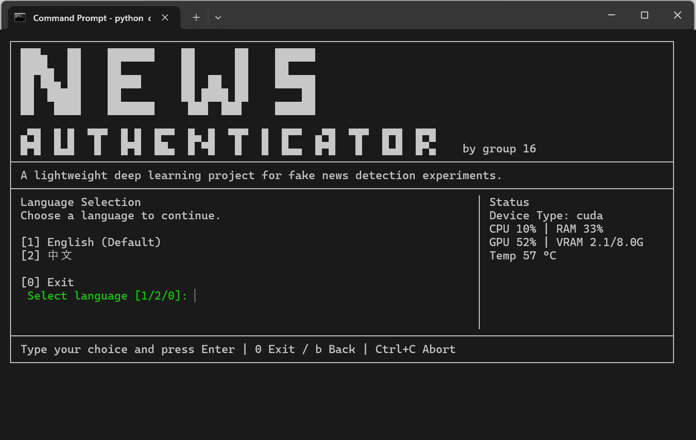
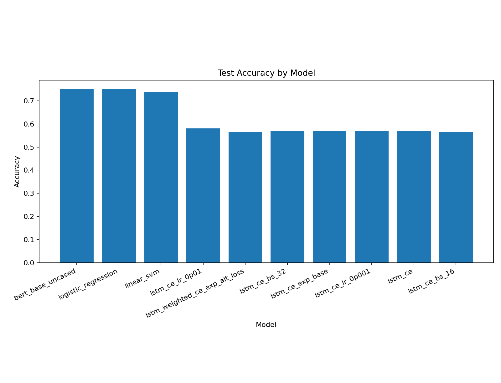
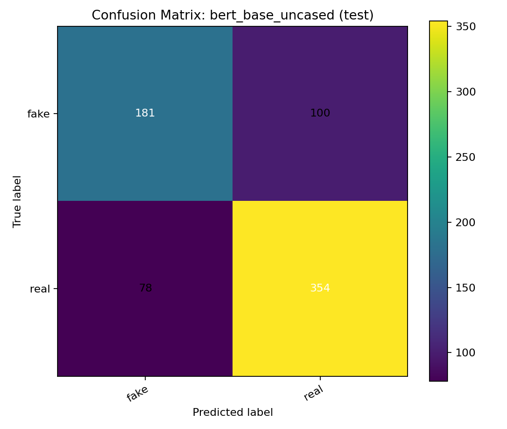

Fake News Detection for
Information Integrity
News Authenticator is a lightweight project website presenting our fake news detection pipeline, model comparison, and project outcomes in a concise and visual way.

Problem and Goal
Why this project matters
Fake news can spread quickly across online platforms and may influence public understanding, social trust, and decision making. Our project studies how machine learning and deep learning models can help classify news content more reliably.
What we aim to do
We build an end-to-end pipeline for data cleaning, text representation, model training, and evaluation. The goal is to compare classical baselines with transformer-based models and present the results clearly.
Workflow
Pipeline summary
- Prepare and clean the dataset.
- Split the data into training, validation, and test sets.
- Train baseline models such as Logistic Regression and SVM.
- Fine-tune a BERT-based classifier.
- Compare metrics and export results.

Results Snapshot
Key findings
- Classical baselines provide a strong reference point.
- BERT improves contextual understanding of news text.
- Macro-F1, precision, recall, and accuracy are used for evaluation.
- The final page highlights the best-performing configuration.


What this page is for
This site is designed as a compact project introduction page. It is suitable for class presentation, portfolio use.
Team and Links
Project
News Authenticator
Course-based fake news detection project
Team
Group 16
CDS525 Practical Application of Deep Learning